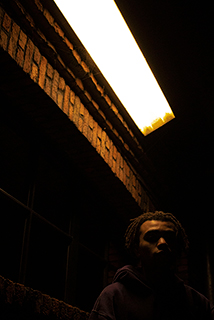
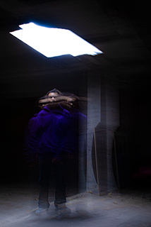
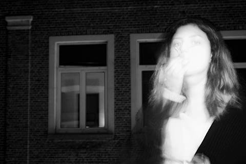
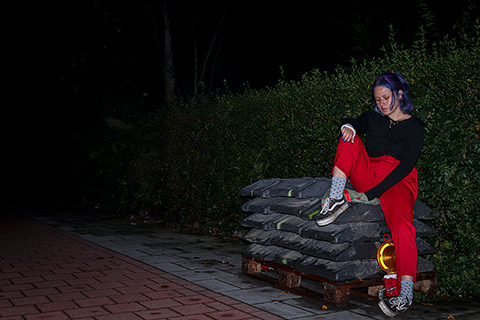
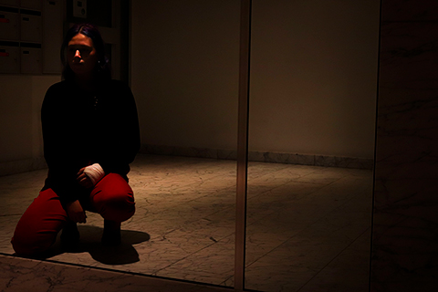
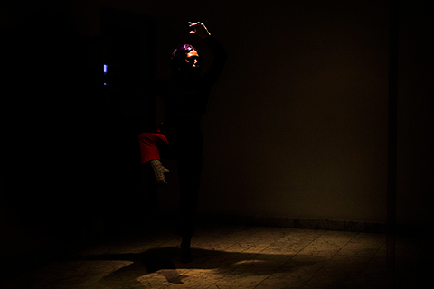

David zijn bovenbuur Farid is een grote Jimi Hendrix-fan, dit kwam hij te weten doordat zijn onderbuur altijd op zijn gitaar zit te oefenen en luide muziek speelt. David stoorde zich hier eerst vrij ernstig aan totdat hij kwam klagen aan Farid zijn deur en de twee mannen bijna een gevecht hadden, dit werd al snel opgelost dankzij David hun bovenbuur Rachel, een spirituele jongedame. Zijn overbuur oefent vaak ballet in haar studio-appartement. Af en toe zwaaien ze naar elkaar.
     